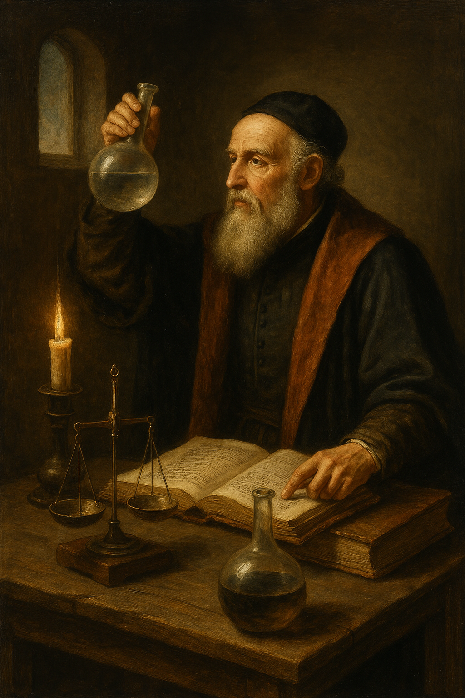

Il Medioevo fu un periodo lungo e complesso che vide profondi cambiamenti nel modo di concepire l’universo. Con la caduta dell’Impero Romano d’Occidente (476 d.C.),
molte conoscenze astronomiche dell’antichità greco-romana andarono perdute in Europa, ma vennero preservate nei monasteri cristiani,
dove i monaci trascrissero antichi testi, tra cui opere di Tolomeo, Aristotele e Platone.
Tuttavia, la vera rinascita dell’astronomia non avvenne in Occidente, bensì nel mondo islamico. Tra il VII e il XIII secolo,
il califfato arabo divenne un motore straordinario di diffusione del sapere: traduzioni dall’arabo di testi greci, come l’Almagesto di Tolomeo,
vennero accompagnate da osservazioni originali e miglioramenti teorici. Astronomi come Al-Battani perfezionarono il valore dell’anno solare;
Al-Sufi compilò un catalogo stellare aggiornato; Ibn al-Haytham sviluppò l’ottica e l’uso sistematico della sperimentazione.
Gli strumenti astronomici vennero perfezionati: l’astrolabio, già noto nell’antichità, divenne uno strumento fondamentale sia per l’osservazione celeste sia per usi pratici come la navigazione e la determinazione dell’ora esatta per la preghiera. Le città di Baghdad, Damasco, Toledo e Cordova divennero importanti centri di astronomia e scienza.

In Europa, l’influenza del pensiero aristotelico-tolemaico rimase dominante: la Terra immobile al centro dell’universo, circondata da sfere cristalline
su cui si muovevano i pianeti e le stelle. Questa visione era pienamente compatibile con la teologia cristiana, che poneva l’uomo e la Terra
al centro della creazione divina.
Dal XII secolo in poi, grazie alla mediazione araba, molti testi vennero tradotti in latino. Gerardo da Cremona tradusse l’Almagesto e oltre 70 trattati scientifici,
riportando in Europa un patrimonio astronomico dimenticato. Questo avviò un nuovo interesse per lo studio del cielo, soprattutto nelle scuole cattedrali
e nelle università medievali come quella di Parigi o di Bologna.
Pensatori come Ruggero Bacone (ca. 1214–1292), frate francescano e filosofo naturale, furono pionieri nell’utilizzo del metodo empirico.
Bacone sottolineava l'importanza dell'osservazione diretta e dell'esperienza per validare la conoscenza scientifica, in contrasto con il dogmatismo
basato solo sull'autorità dei testi antichi. Considerava la matematica il linguaggio universale della natura e riteneva che la scienza dovesse avere
anche una funzione pratica, anticipando in parte la visione moderna della tecnologia come applicazione del sapere.
Nel XIV secolo, altre importanti figure emersero. Giovanni Buridano, filosofo e teologo francese, formulò la teoria dell’impetus,
un’anticipazione del concetto d’inerzia. Secondo lui, un corpo in movimento continua a muoversi anche in assenza di una forza, contrariamente
alla visione aristotelica, che sosteneva che ogni moto dovesse essere costantemente “spinto”. Questa idea sarà fondamentale nel superamento
della fisica aristotelica e preparerà il terreno per la meccanica di Galileo e Newton.
Nicole Oresme, altro importante pensatore attivo all’Università di Parigi, ebbe intuizioni straordinarie. Egli si interrogò criticamente
sull'idea della Terra immobile e propose, come ipotesi teorica, che potesse ruotare su sé stessa. Pur rimanendo ufficialmente fedele
al modello geocentrico, il solo fatto di contemplare un’alternativa rappresentava un passo avanti rispetto al dogma.
Oresme produsse anche importanti riflessioni di tipo matematico e geometrico, introducendo grafici cartesiani secoli prima di Cartesio.
Questi fermenti intellettuali, nati in seno alla scolastica medievale, dimostrano che l’astronomia non era affatto “spenta” nel Medioevo,
ma stava lentamente preparando una trasformazione profonda. Le università europee — nate nel XII e XIII secolo — divennero ambienti
in cui il sapere veniva preservato, rielaborato e messo alla prova, anche se ancora inquadrato nel contesto religioso e filosofico dell’epoca.
Alla fine del Medioevo, si respirava dunque un’aria di transizione: da una cosmologia chiusa, simbolica e geocentrica,
verso una visione dinamica e razionale del cosmo. Quando nel 1543 Copernico pubblicò la sua opera rivoluzionaria,
l’Europa era pronta ad accogliere una nuova immagine dell’universo. Senza le basi gettate dagli studiosi medievali,
la rivoluzione copernicana — e con essa l’astronomia moderna — non sarebbe stata possibile.